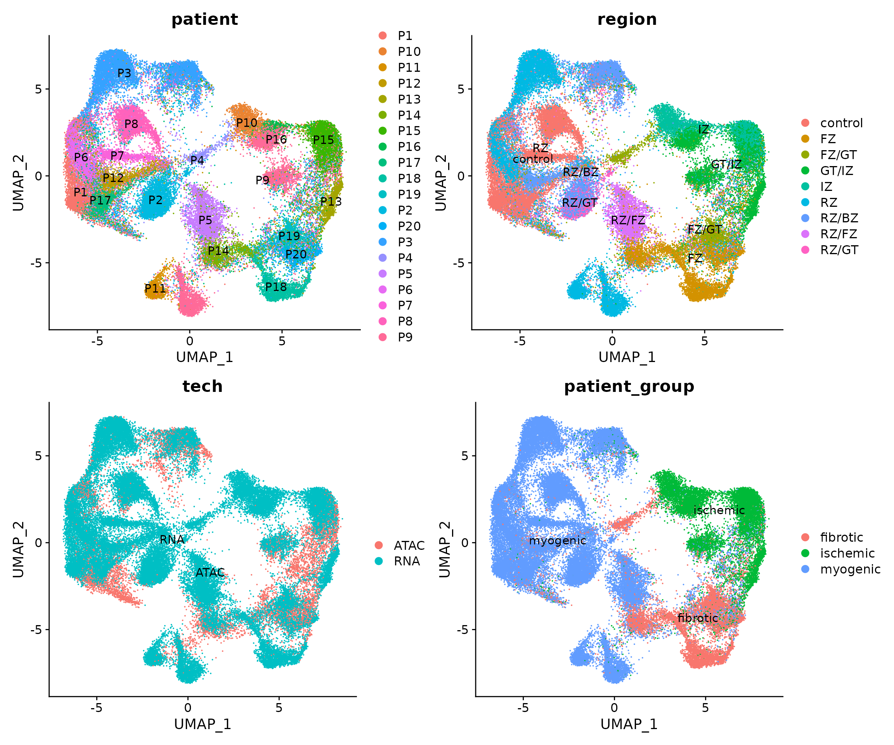
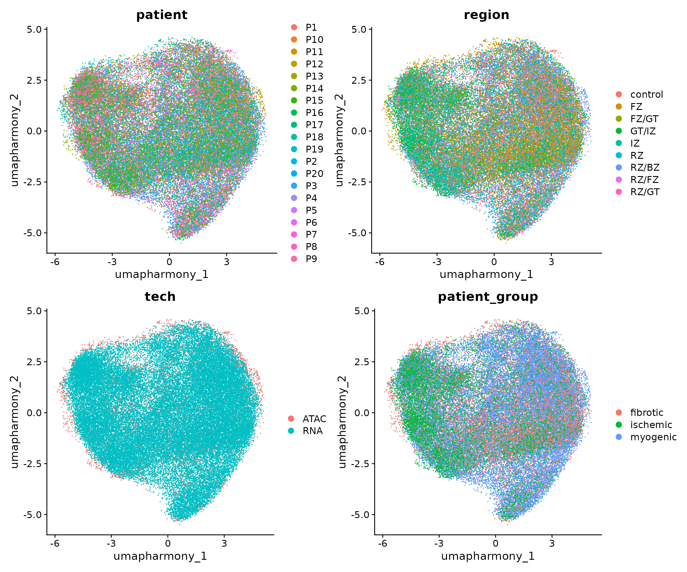
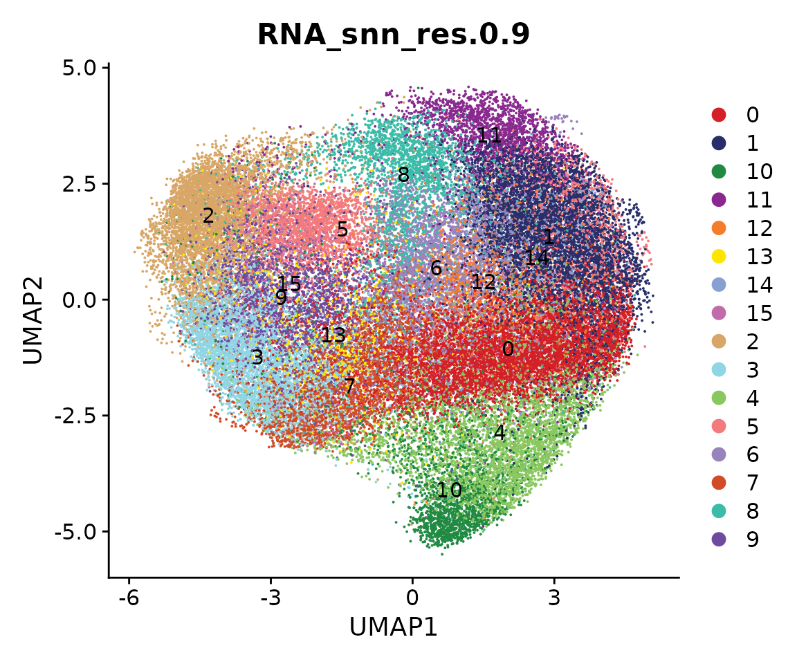
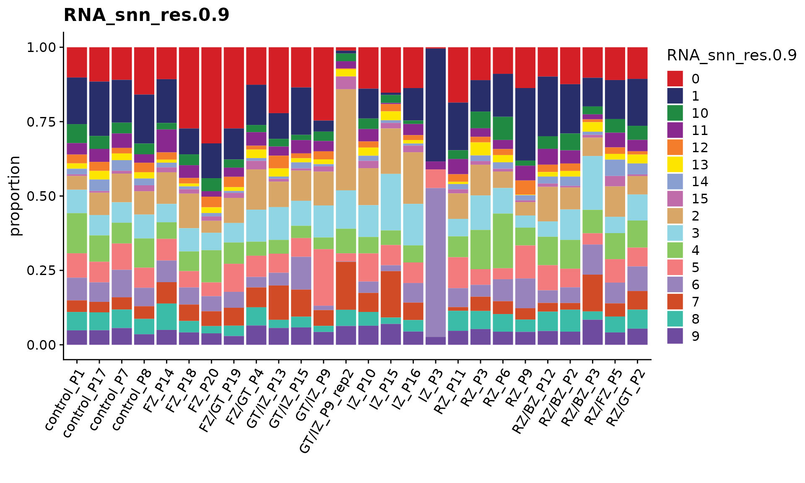
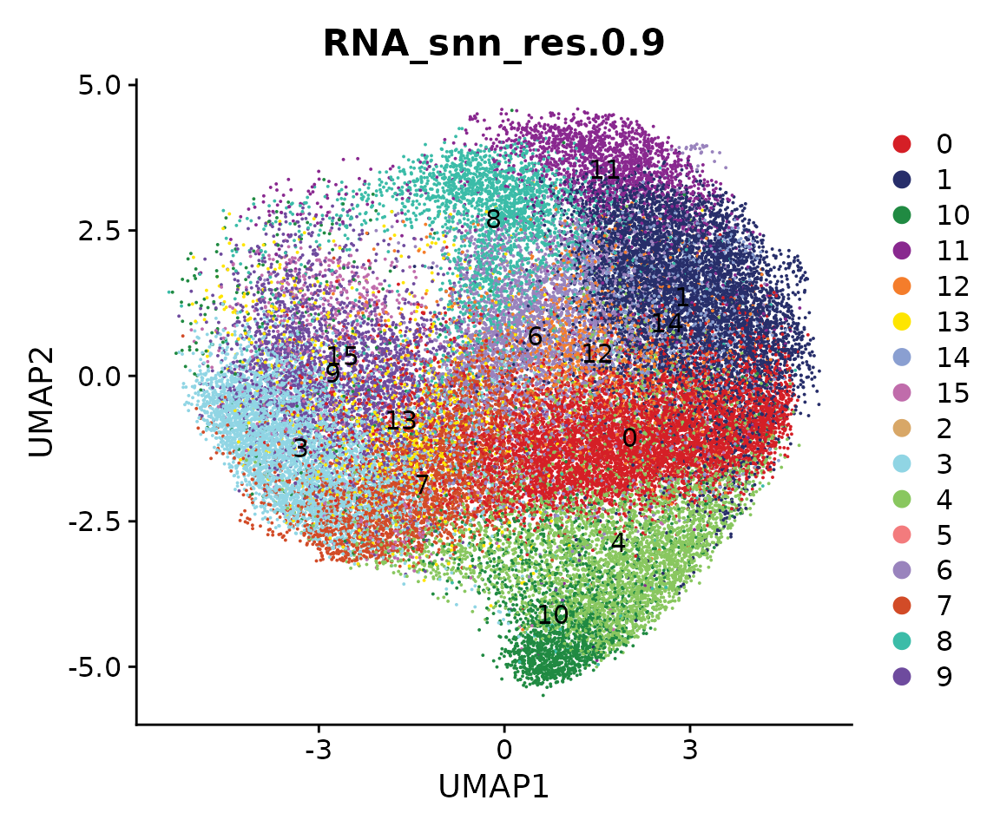
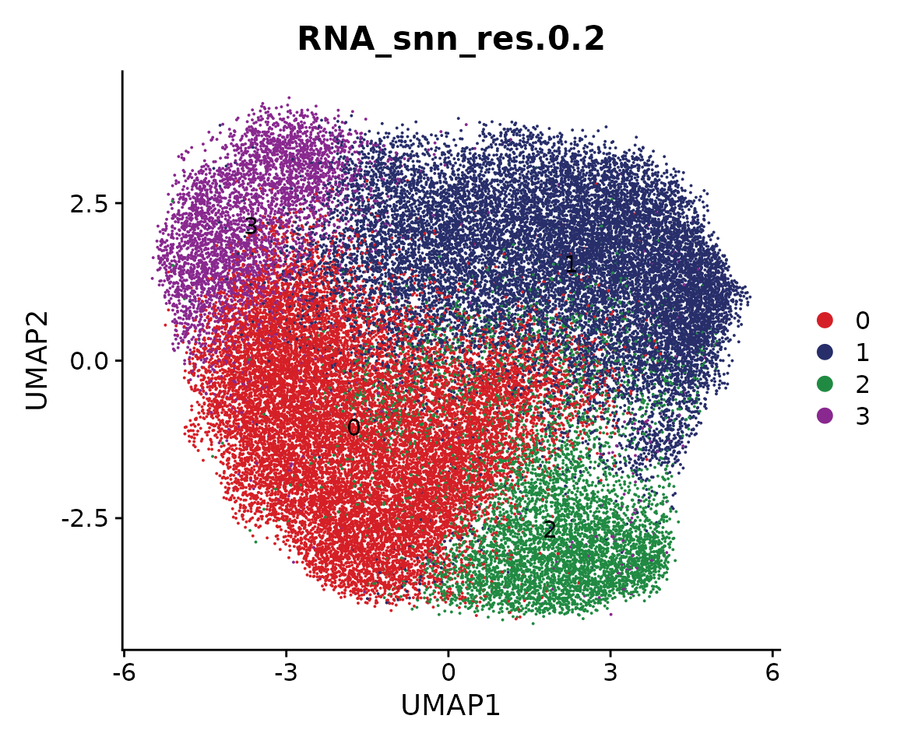
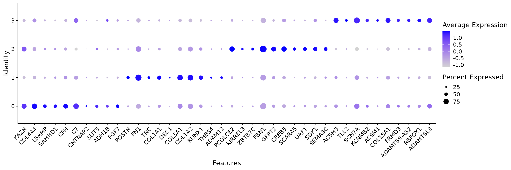
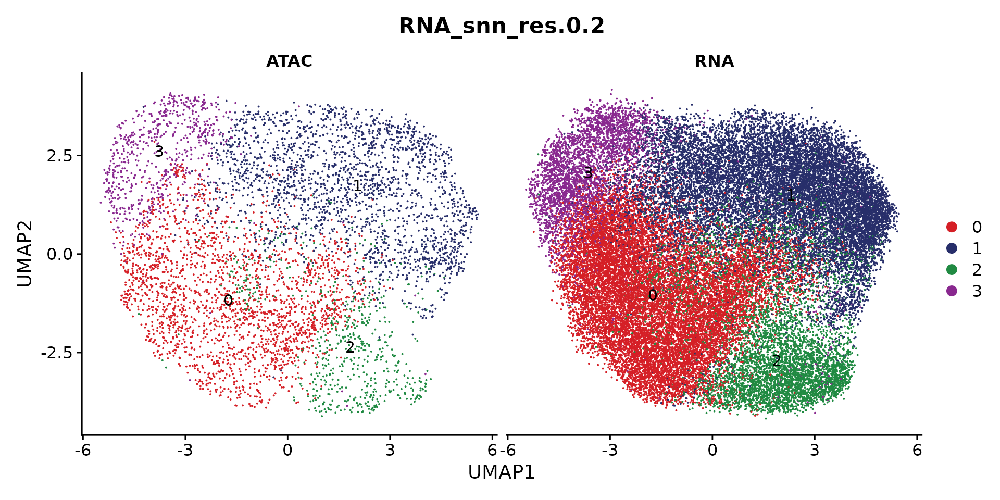
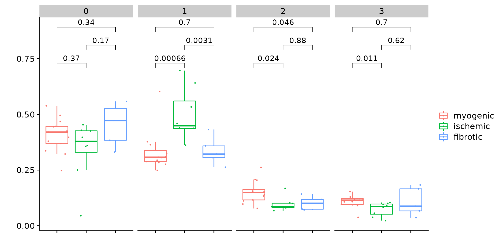
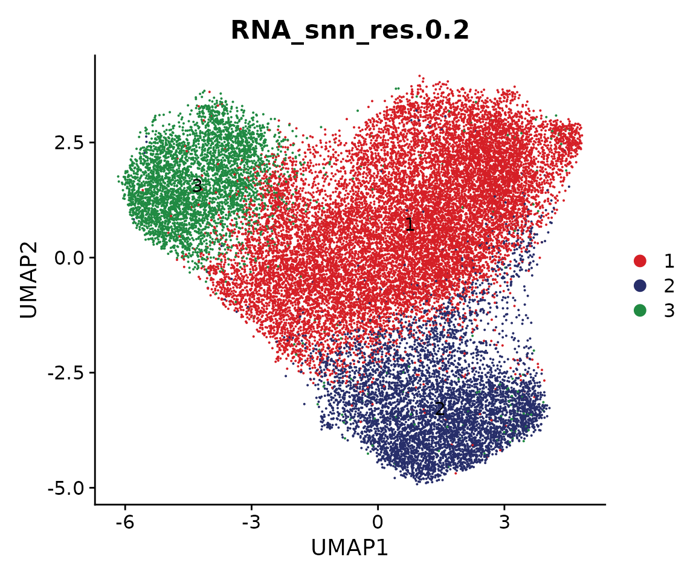

Gene-regulatory network of myofibroblast differentiation in myocardial infarction
Compiled: June 07, 2022
myofibroblast-preprocessing.RmdDuring this tutorial, we will integrate the snRNA-seq and snATAC-seq data generated from the human heart samples after myocardial infarction. The integrated data will be used as input for inferring gene regulatory network.
We first download the required data. In this case, we need two Seurat objects with each one corresponding to snRNA-seq and snATAC-seq respectively. The snRNA-seq object includes gene expression data of all fibroblasts and the snATAC-seq includes all chromatin accessibility profiles. Additionally, we also need a gene activity matrix for data integration. This matrix was estimated from the snATAC-seq data by using the ArchR package. The script of cleaning the data and preparing these objects is found here.
Run the following commands to download the data:
Next, we load all necessary packages:
suppressMessages(library(ArchR))
suppressMessages(library(Seurat))
suppressMessages(library(Signac))
suppressMessages(library(scMEGA))
suppressMessages(library(harmony))
suppressMessages(library(Nebulosa))
suppressMessages(library(BSgenome.Hsapiens.UCSC.hg38))
suppressMessages(library(ggplot2))
suppressMessages(library(dplyr))Let’s load the data into memory and see how they look like
obj.rna <- readRDS("./Myofib/snRNA.rds")
obj.atac <- readRDS("./Myofib/snATAC.rds")
gene.activity <- readRDS("./Myofib/gene.activity.rds")
obj.rna## An object of class Seurat
## 28933 features across 45515 samples within 1 assay
## Active assay: RNA (28933 features, 2000 variable features)
## 4 dimensional reductions calculated: pca, harmony, umap, umap_harmony
obj.atac## An object of class Seurat
## 173843 features across 6481 samples within 1 assay
## Active assay: ATAC (173843 features, 0 variable features)
## 3 dimensional reductions calculated: harmony, umap, umap_harmonyWe can observe that there are 45,515 and 6,481 cells in our snRNA-seq and snATAC-seq datasets. We now visualize the data as colored by patients. Note that here we used the UMAP embedding generated from batch-corrected low-dimensional space so that no batch effects are observed from the 2D visualization.
p1 <- DimPlot(obj.rna, pt.size = 1, reduction = "umap_harmony") +
ggtitle("snRNA-seq")
p2 <- DimPlot(obj.atac, pt.size = 1, reduction = "umap_harmony") +
ggtitle("snATAC-seq")
p1 + p2
Co-embedding
First, we need to project the data into a common low-dimensional space. This is done by using the CCA method from Seurat. To this end, we have wrapped several functions from Seurat into a single function CoembedData.
obj.coembed <- CoembedData(
obj.rna,
obj.atac,
gene.activity,
weight.reduction = "harmony",
verbose = FALSE
)## Performing data integration using Seurat...## Warning in RunCCA.Seurat(object1 = reference, object2 = query, features =
## features, : Running CCA on different assays## Finding integration vectors## Finding integration vector weights## Transfering 19026 features onto reference data## Coemebdding the data...## Centering data matrix## Warning: The default method for RunUMAP has changed from calling Python UMAP via reticulate to the R-native UWOT using the cosine metric
## To use Python UMAP via reticulate, set umap.method to 'umap-learn' and metric to 'correlation'
## This message will be shown once per sessionWe next visualize the snRNA-seq and snATAC-seq in this shared UMAP space. The cells are colored by patients or modalities.
p1 <- DimPlot(obj.coembed, group.by = "patient", shuffle = TRUE, label = TRUE)
p2 <- DimPlot(obj.coembed, group.by = "tech", shuffle = TRUE, label = TRUE)
p1 + p2
The batch effects between patients, regions and modalities are quite clear. So next we use Harmony to perform batch correction and generate a new UMAP embedding.
obj.coembed <- RunHarmony(
obj.coembed,
group.by.vars = c("patient", "region", "tech"),
reduction = "pca",
max.iter.harmony = 30,
dims.use = 1:30,
project.dim = FALSE,
plot_convergence = FALSE
)## Warning: Quick-TRANSfer stage steps exceeded maximum (= 2599800)## Harmony 1/30## Harmony 2/30## Harmony 3/30## Harmony 4/30## Harmony 5/30## Harmony 6/30## Harmony 7/30## Harmony 8/30## Harmony 9/30## Harmony 10/30## Harmony 11/30## Harmony 12/30## Harmony 13/30## Harmony 14/30## Harmony 15/30## Harmony 16/30## Harmony 17/30## Harmony 18/30## Harmony converged after 18 iterations
obj.coembed <- RunUMAP(
obj.coembed,
dims = 1:30,
reduction = 'harmony',
reduction.name = "umap_harmony",
reduction.ke = 'umapharmony_',
verbose = FALSE,
min.dist = 0.4
)We can plot the data again
p1 <-
DimPlot(obj.coembed, group.by = "patient", reduction = "umap_harmony")
p2 <-
DimPlot(obj.coembed, group.by = "tech", reduction = "umap_harmony")
p1 + p2
From the new UMAP embedding, we can observe that after batch-correction, cells from different patients, regions, and modalities are well mixed.
Based on our previous works of myofibroblast differentiation in human and mouse kidney, we already known some relevant genes for this biological process. For example, SCARA5 is a marker for myofibroblast progenitor, and COL1A1, POSTN, and FN1 are highly expressed in myofibroblast. Therefore we can visualize the expression of these genes to check if we can also identify similar process in human heart. Note that to make the visualization clear, here we used the package Nebulosa to plot the data.
p1 <-
plot_density(obj.coembed,
features = "SCARA5",
reduction = "umap_harmony",
pal = "magma")
p2 <-
plot_density(obj.coembed,
features = "COL1A1",
reduction = "umap_harmony",
pal = "magma")
p3 <-
plot_density(obj.coembed,
features = "POSTN",
reduction = "umap_harmony",
pal = "magma")
p4 <-
plot_density(obj.coembed,
features = "FN1",
reduction = "umap_harmony",
pal = "magma")
(p1 + p2) / (p3 + p4)
From the visualization, we can observe that some cells highly express SCARA5 which could be the progenitors of myofibroblasts. On the other hand, some cells highly express COL1A1, POSTN, and FN1 and they could be terminally differentiated myofibroblasts.
Sub-clustering
We next perform sub-clustering to identify different populations in our multi-omic fibroblast data. To further control the data quality, here we will use a two-round approach to remove low-quality cells. We first use a high-resolution to get a large amount of clusters.
obj.coembed <- FindNeighbors(obj.coembed, reduction = "harmony", dims = 1:30)## Computing nearest neighbor graph## Computing SNN
obj.coembed <- FindClusters(obj.coembed, resolution = 0.9, verbose = FALSE)
cols <- ArchR::paletteDiscrete(obj.coembed@meta.data[, "RNA_snn_res.0.9"])
p <- DimPlot(obj.coembed, group.by = "RNA_snn_res.0.9", label = TRUE,
reduction = "umap_harmony", shuffle = TRUE) +
scale_color_manual(values = cols) +
xlab("UMAP1") + ylab("UMAP2")
p
We can use the function CellPropPlot to visualize the cell propotion across all patients.
p <- CellPropPlot(obj.coembed,
group.by = "RNA_snn_res.0.9",
prop.in = "patient_region_id",
cols = cols)
p
Next, we identify the markers for each cluster and visualize the top 3.
all.markers <- FindAllMarkers(obj.coembed,
only.pos = TRUE,
min.pct = 0.25, logfc.threshold = 0.5)## Calculating cluster 0## Calculating cluster 1## Calculating cluster 2## Calculating cluster 3## Calculating cluster 4## Calculating cluster 5## Calculating cluster 6## Calculating cluster 7## Calculating cluster 8## Calculating cluster 9## Calculating cluster 10## Calculating cluster 11## Calculating cluster 12## Calculating cluster 13## Calculating cluster 14## Calculating cluster 15
df <- all.markers %>%
group_by(cluster) %>%
slice_max(n = 3, order_by = avg_log2FC)
p <- DotPlot(obj.coembed, features = unique(df$gene)) + RotatedAxis()
print(p)
The above dot plot demonstrates the top 3 markers per cluster and we can easily classify cluster 3 and 7 as myofibroblasts. In addition, two clusters (i.e., cluster 2 and 5) are marked by RYR2, a well known marker gene for cardiomyocyte, likely due to the background noise. It is worth pointing out that in another study Cells of the adult human heart a similar fibroblast sub-population (marked by another cardiomyocyte-specific gene TNNT2) was also identified. Based on these, we decide to remove these two clusters.
Idents(obj.coembed) <- "RNA_snn_res.0.9"
coembed.sub <- subset(obj.coembed, idents = c(2, 5), invert = TRUE)
coembed.sub## An object of class Seurat
## 221802 features across 43276 samples within 3 assays
## Active assay: RNA (28933 features, 2000 variable features)
## 2 other assays present: ATAC, GeneActivity
## 4 dimensional reductions calculated: pca, umap, harmony, umap_harmony
cols.clusters <- ArchR::paletteDiscrete(coembed.sub@meta.data[, "RNA_snn_res.0.9"])
p <- DimPlot(coembed.sub, group.by = "RNA_snn_res.0.9", label = TRUE,
reduction = "umap_harmony", shuffle = TRUE, cols = cols) +
xlab("UMAP1") + ylab("UMAP2")
p
We then re-do the UMAP embedding and clustering with a lower resolution to reduce complexity.
coembed.sub <- RunUMAP(coembed.sub,
dims = 1:30,
reduction = 'harmony',
reduction.name = "umap_harmony",
reduction.key = 'umap_harmony_',
verbose = FALSE,
min.dist = 0.4)## Warning: Keys should be one or more alphanumeric characters followed by an
## underscore, setting key from umap_harmony_ to umapharmony_## Warning: All keys should be one or more alphanumeric characters followed by an
## underscore '_', setting key to umapharmony_
## re-clustering
coembed.sub <- FindNeighbors(coembed.sub, reduction = "harmony", dims = 1:30)## Computing nearest neighbor graph## Computing SNN
coembed.sub <- FindClusters(coembed.sub, resolution = 0.2, verbose = FALSE)
cols <- ArchR::paletteDiscrete(coembed.sub@meta.data[, "RNA_snn_res.0.2"])
p <- DimPlot(coembed.sub, group.by = "RNA_snn_res.0.2", label = TRUE,
reduction = "umap_harmony", shuffle = TRUE) +
scale_color_manual(values = cols) +
xlab("UMAP1") + ylab("UMAP2")
p 
Marker genes are identified based on new clustering results and we can plot the top 10 markers.
all.markers <- FindAllMarkers(coembed.sub,
only.pos = TRUE,
min.pct = 0.25, logfc.threshold = 0.5)## Calculating cluster 0## For a more efficient implementation of the Wilcoxon Rank Sum Test,
## (default method for FindMarkers) please install the limma package
## --------------------------------------------
## install.packages('BiocManager')
## BiocManager::install('limma')
## --------------------------------------------
## After installation of limma, Seurat will automatically use the more
## efficient implementation (no further action necessary).
## This message will be shown once per session## Calculating cluster 1## Calculating cluster 2## Calculating cluster 3
df <- all.markers %>%
group_by(cluster) %>%
slice_max(n = 10, order_by = avg_log2FC)
p <- DotPlot(coembed.sub, features = unique(df$gene)) + RotatedAxis()## Warning: Scaling data with a low number of groups may produce misleading results
print(p)
Now the clustering results are clearer, and cluster 1 is myofibroblast, and cluster 2 is SCARA5+ fibroblast.
We can plot the snRNA-seq and snATAC-seq data separately
p <- DimPlot(coembed.sub, group.by = "RNA_snn_res.0.2", label = TRUE,
reduction = "umap_harmony", shuffle = TRUE, split.by = "tech",
cols = cols) +
xlab("UMAP1") + ylab("UMAP2")
p
Visualize the cell proportion of each sub-population across all patients
p <- CellPropPlot(coembed.sub,
group.by = "RNA_snn_res.0.2",
prop.in = "patient_region_id",
cols = cols)
p
Since we have annotated all patients into three major groups, i.e., myogenic, ischmeic, and fibrotic. we can also perform statistical test to check if any sub-population are enriched in any of the above group. This can be done by the function CompareCellProp.
coembed.sub$patient_group <- factor(coembed.sub$patient_group,
levels = c("myogenic", "ischemic", "fibrotic"))
p <- CompareCellProp(object = coembed.sub,
group.by = "RNA_snn_res.0.2",
prop.in = "patient_region_id",
sample.annotation = "patient_group",
comparisons = list(c("myogenic", "ischemic"),
c("ischemic", "fibrotic"),
c("myogenic", "fibrotic")))
p## Warning in wilcox.test.default(c(0.1147124245313, 0.121564482029598,
## 0.120168067226891, : cannot compute exact p-value with ties
This analysis reveals significant changes of cell proportion between different conditions for cluster 1, 2, and 3. We therefore only use these three clusters in our trajectory analysis.
We can generate a new UMAP
cols <- ArchR::paletteDiscrete(unique(coembed.sub@meta.data[, "RNA_snn_res.0.2"]))
coembed.sub <- RunUMAP(coembed.sub,
dims = 1:30,
reduction = 'harmony',
reduction.name = "umap_harmony",
reduction.ke = 'umap_harmony_',
verbose = FALSE)## Warning: Keys should be one or more alphanumeric characters followed by an
## underscore, setting key from umap_harmony_ to umapharmony_## Warning: All keys should be one or more alphanumeric characters followed by an
## underscore '_', setting key to umapharmony_
p <- DimPlot(coembed.sub, group.by = "RNA_snn_res.0.2", label = TRUE,
reduction = "umap_harmony", shuffle = TRUE, cols = cols) +
xlab("UMAP1") + ylab("UMAP2")
p
Save data
saveRDS(coembed.sub, "./Myofib/coembed.sub.rds")
# Check session information
sessionInfo()## R version 4.1.3 (2022-03-10)
## Platform: x86_64-conda-linux-gnu (64-bit)
## Running under: Rocky Linux 8.5 (Green Obsidian)
##
## Matrix products: default
## BLAS/LAPACK: /home/rs619065/miniconda3/envs/scmega/lib/libopenblasp-r0.3.20.so
##
## locale:
## [1] LC_CTYPE=en_US.UTF-8 LC_NUMERIC=C
## [3] LC_TIME=en_US.UTF-8 LC_COLLATE=en_US.UTF-8
## [5] LC_MONETARY=en_US.UTF-8 LC_MESSAGES=en_US.UTF-8
## [7] LC_PAPER=en_US.UTF-8 LC_NAME=C
## [9] LC_ADDRESS=C LC_TELEPHONE=C
## [11] LC_MEASUREMENT=en_US.UTF-8 LC_IDENTIFICATION=C
##
## attached base packages:
## [1] stats4 stats graphics grDevices utils datasets methods
## [8] base
##
## other attached packages:
## [1] dplyr_1.0.9 BSgenome.Hsapiens.UCSC.hg38_1.4.4
## [3] BSgenome_1.62.0 rtracklayer_1.54.0
## [5] Biostrings_2.62.0 XVector_0.34.0
## [7] Nebulosa_1.4.0 patchwork_1.1.1
## [9] harmony_0.1.0 Rcpp_1.0.8.3
## [11] scMEGA_0.1.0 Signac_1.6.0
## [13] sp_1.4-7 SeuratObject_4.1.0
## [15] Seurat_4.1.1 ArchR_1.0.1
## [17] magrittr_2.0.3 rhdf5_2.38.1
## [19] Matrix_1.4-1 data.table_1.14.2
## [21] SummarizedExperiment_1.24.0 Biobase_2.54.0
## [23] GenomicRanges_1.46.1 GenomeInfoDb_1.30.1
## [25] IRanges_2.28.0 S4Vectors_0.32.4
## [27] BiocGenerics_0.40.0 MatrixGenerics_1.6.0
## [29] matrixStats_0.62.0 ggplot2_3.3.6
##
## loaded via a namespace (and not attached):
## [1] SnowballC_0.7.0 scattermore_0.8
## [3] ggthemes_4.2.4 ragg_1.2.2
## [5] tidyr_1.2.0 knitr_1.39
## [7] irlba_2.3.5 DelayedArray_0.20.0
## [9] rpart_4.1.16 RCurl_1.98-1.6
## [11] generics_0.1.2 cowplot_1.1.1
## [13] RANN_2.6.1 proxy_0.4-26
## [15] future_1.25.0 spatstat.data_2.2-0
## [17] httpuv_1.6.5 viridis_0.6.2
## [19] xfun_0.31 jquerylib_0.1.4
## [21] evaluate_0.15 promises_1.2.0.1
## [23] DEoptimR_1.0-11 fansi_1.0.3
## [25] restfulr_0.0.13 igraph_1.3.1
## [27] htmlwidgets_1.5.4 sparsesvd_0.2
## [29] spatstat.geom_2.4-0 purrr_0.3.4
## [31] ellipsis_0.3.2 RSpectra_0.16-1
## [33] ks_1.13.5 backports_1.4.1
## [35] ggpubr_0.4.0 deldir_1.0-6
## [37] vctrs_0.4.1 SingleCellExperiment_1.16.0
## [39] TTR_0.24.3 ROCR_1.0-11
## [41] abind_1.4-5 cachem_1.0.6
## [43] RcppEigen_0.3.3.9.2 withr_2.5.0
## [45] ggforce_0.3.3 robustbase_0.95-0
## [47] progressr_0.10.0 vcd_1.4-9
## [49] sctransform_0.3.3 GenomicAlignments_1.30.0
## [51] xts_0.12.1 mclust_5.4.9
## [53] goftest_1.2-3 cluster_2.1.3
## [55] lazyeval_0.2.2 laeken_0.5.2
## [57] crayon_1.5.1 labeling_0.4.2
## [59] pkgconfig_2.0.3 slam_0.1-50
## [61] tweenr_1.0.2 nlme_3.1-157
## [63] nnet_7.3-17 rlang_1.0.2
## [65] globals_0.15.0 lifecycle_1.0.1
## [67] miniUI_0.1.1.1 rprojroot_2.0.3
## [69] polyclip_1.10-0 RcppHNSW_0.3.0
## [71] lmtest_0.9-40 ggseqlogo_0.1
## [73] carData_3.0-5 Rhdf5lib_1.16.0
## [75] boot_1.3-28 zoo_1.8-10
## [77] ggridges_0.5.3 rjson_0.2.21
## [79] png_0.1-7 viridisLite_0.4.0
## [81] bitops_1.0-7 KernSmooth_2.23-20
## [83] rhdf5filters_1.6.0 stringr_1.4.0
## [85] parallelly_1.31.1 spatstat.random_2.2-0
## [87] rstatix_0.7.0 ggsignif_0.6.3
## [89] scales_1.2.0 memoise_2.0.1
## [91] plyr_1.8.7 hexbin_1.28.2
## [93] ica_1.0-2 zlibbioc_1.40.0
## [95] compiler_4.1.3 BiocIO_1.4.0
## [97] RColorBrewer_1.1-3 pcaMethods_1.86.0
## [99] fitdistrplus_1.1-8 Rsamtools_2.10.0
## [101] cli_3.3.0 listenv_0.8.0
## [103] pbapply_1.5-0 ggplot.multistats_1.0.0
## [105] MASS_7.3-57 mgcv_1.8-40
## [107] tidyselect_1.1.2 stringi_1.7.6
## [109] textshaping_0.3.6 highr_0.9
## [111] yaml_2.3.5 ggrepel_0.9.1
## [113] grid_4.1.3 sass_0.4.1
## [115] fastmatch_1.1-3 tools_4.1.3
## [117] future.apply_1.9.0 parallel_4.1.3
## [119] lsa_0.73.3 gridExtra_2.3
## [121] smoother_1.1 scatterplot3d_0.3-41
## [123] farver_2.1.0 Rtsne_0.16
## [125] ggraph_2.0.5 digest_0.6.29
## [127] rgeos_0.5-9 shiny_1.7.1
## [129] pracma_2.3.8 qlcMatrix_0.9.7
## [131] broom_0.8.0 car_3.0-13
## [133] later_1.3.0 RcppAnnoy_0.0.19
## [135] httr_1.4.3 colorspace_2.0-3
## [137] XML_3.99-0.9 fs_1.5.2
## [139] tensor_1.5 ranger_0.13.1
## [141] reticulate_1.25 splines_4.1.3
## [143] uwot_0.1.11 RcppRoll_0.3.0
## [145] spatstat.utils_2.3-1 pkgdown_2.0.3
## [147] graphlayouts_0.8.0 plotly_4.10.0
## [149] systemfonts_1.0.4 xtable_1.8-4
## [151] jsonlite_1.8.0 tidygraph_1.2.1
## [153] destiny_3.8.1 R6_2.5.1
## [155] pillar_1.7.0 htmltools_0.5.2
## [157] mime_0.12 glue_1.6.2
## [159] fastmap_1.1.0 VIM_6.1.1
## [161] BiocParallel_1.28.3 class_7.3-20
## [163] codetools_0.2-18 mvtnorm_1.1-3
## [165] utf8_1.2.2 lattice_0.20-45
## [167] bslib_0.3.1 spatstat.sparse_2.1-1
## [169] tibble_3.1.7 curl_4.3.2
## [171] leiden_0.4.2 gtools_3.9.2
## [173] survival_3.3-1 rmarkdown_2.14
## [175] docopt_0.7.1 desc_1.4.1
## [177] munsell_0.5.0 e1071_1.7-9
## [179] GenomeInfoDbData_1.2.7 reshape2_1.4.4
## [181] gtable_0.3.0 spatstat.core_2.4-2